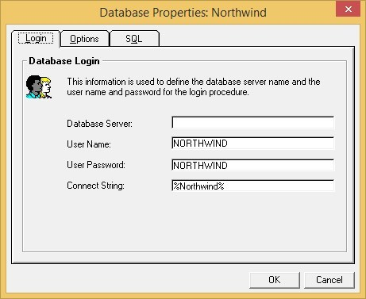

Magic is using Oracle client to access Oracle DB.
The client reads the Tnsnames.ora file to get details
of the relevant Oracle data location (server, user).
The location of this file can be set using various methods - you can read more about it here.
The migrated code is not using Oracle client but rather
ODP (Oracle Data Provider for .NET) - you can read about
it here.
Because of that it is not aware of the location of the Tnsnames.ora
file - this has to be copied next to the EXE file
or be places in the path.
You can easily replace the use of the Tnsnames.ora file by placing the connection details in the INI.
After the change the DB properties should look like this:

(alternatively you can change the INI manually)
This is the matching entry in the Tnsnames.ora:
Northwind =
(DESCRIPTION =
(ADDRESS_LIST =
(ADDRESS = (PROTOCOL = TCP)(HOST = 1.2.3.4)(PORT = 1521))
)
(CONNECT_DATA =
(SERVICE_NAME = orcl)
)
)
So the logical name should look like this:
[MAGIC_LOGICAL_NAMES]
Northwind = (DESCRIPTION = (ADDRESS_LIST = (ADDRESS = (PROTOCOL = TCP)(HOST = 1.2.3.4)(PORT = 1521))) (CONNECT_DATA = (SERVICE_NAME = orcl)))